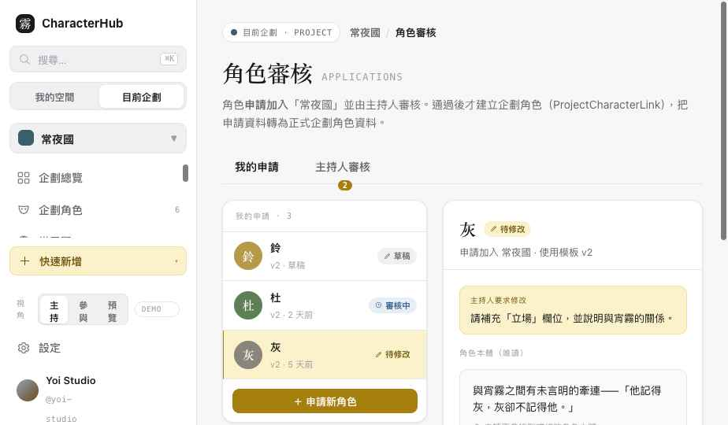
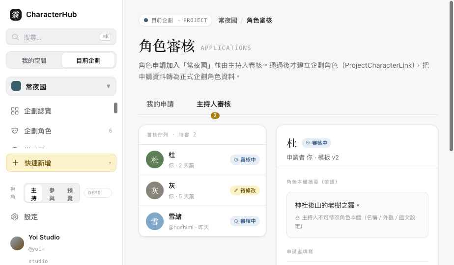

CharacterHub · Slice 5C · 角色加入申請
Slice 5C 驗收
只處理角色加入申請與審核（不含圖片／文章 Content Submission）。CharacterApplication 與 ProjectCharacterLink 嚴格分離；通過時原子建立 Link 並轉入 fieldValues。申請只用 Published 模板版本，發布新版不默默替換。
submissions.html
CharacterApplication ≠ Link
v2 申請中 / v3 已發布
Demo interaction only
01
可點擊頁面
Clickable
同一審核中心兩個分頁：我的申請（申請者）與主持人審核（依權限）。資料與 ContentSubmission 不混用。用側欄「視角」切換主持／參與／預覽。

我的申請 · changes_requested 顯示退修原因

主持人審核 · 本體唯讀 + Link 預覽
02
Application ↔ Link 邊界
Strict separation
| 概念 | 規則 |
|---|
| CharacterApplication.fieldValues | 申請階段的填寫值。通過前不存在正式 ProjectCharacterLink。 |
| 通過（原子） | Application → approved ＋建立 ProjectCharacterLink ＋將核准 fieldValues 轉入 Link.fieldValues。任一步失敗整體回復——不出現「已通過但企劃角色不存在」（?failapprove=1 可演示）。 |
| Idempotent | 已通過的 Application 不重複建立第二筆 Link，需顯示 already-processed 狀態。 |
| fieldKey 對應 | fieldValues 以穩定 fieldKey 對應，不依賴每個 Version 的暫時 row id。 |
03
申請資格
Eligibility
| 同一角色狀態 | 行為 |
|---|
| 已有 active Link | 不可再次申請（顯示已在企劃）。 |
| 已有 submitted Application | 前往查看，不重複建立。 |
| changes_requested | 繼續修改後重送。 |
| rejected / withdrawn | 依 joinPolicy 決定能否重新申請。 |
| 角色擁有權 | 角色必須由申請者擁有；Host 不因審核權取得 Character 本體編輯權。 |
| 沒有角色 | 引導「先建立角色 → 返回申請流程」。 |
04
模板版本
Template version
申請只使用 Published 版本（常夜國目前 v2 已發布、v3 為 draft）。填寫期間若發布新版，顯示「此申請使用 v2／目前已有 v3」並提供：繼續用 v2、升級到 v3、查看新增／修改／移除欄位——不默默替換。Required 規則依 editableBy 與階段判斷：Host-only required 欄位不阻止申請者提交。
05
主持人審核 + 隱私裁切
Review · privacy crop
審核畫面分區：角色本體摘要（唯讀）、申請者填寫欄位、主持人審核欄位、審核紀錄、將建立的 ProjectCharacterLink 預覽。可通過／要求修改／拒絕（後兩者必填原因）。主持人看到的是權限裁切後的 Character 摘要，不含 privateNotes、未分享 Inspiration、其他私人企劃版本、無關私人 Asset。
06
Action Permission
Slice 5B resolution
沿用 5B 的 Permission Resolution 與 Object-level Ownership：application:create / view_own / update_own / submit / withdraw / review / request_changes / approve / reject。參與者只能管理自己的申請；審核動作需 application:review，預覽（visitor）為 Forbidden。
07
狀態與錯誤（15 情境）
States
沒有角色
可申請角色
角色已在企劃
Draft
Submitted
Changes Requested
Approved
Rejected
Withdrawn
模板可升級
提交失敗（驗證）
通過交易失敗
另分頁已審核
無審核權限
無待審申請
08
Responsive / A11y
RWD · A11y
桌機三欄（清單／步驟 ＋ 表單或審核 ＋ 角色摘要／紀錄）；窄寬改單欄步驟、審核內容 Accordion、固定底部操作。A11y：錯誤摘要 + focus 到第一個錯誤欄位、狀態 aria-live、Dialog focus trap、退修原因可被螢幕閱讀器辨識、狀態 badge 文字＋圖示不只靠顏色。鍵盤可操作申請清單（Enter/Space）。
09
Contract / API Status
Status
DOMAIN CONTRACT READY · CharacterApplication
id / projectId / characterId / applicantUserId / templateVersionId / fieldValues / status / reviewMessage? / submittedAt? / reviewedAt? / reviewedBy?。狀態 draft / submitted / changes_requested / approved / rejected / withdrawn。通過時原子建立 Link 並轉 fieldValues。
API STATUS · NOT IMPLEMENTED
本地已有 ProjectCharacterLink，但正式 CharacterApplication API、審核 transaction 與 Repository 尚未實作。本頁所有寫入皆為 Demo。
10
Demo-only / Open Issues
Demo · 未完成
demo建立草稿、儲存、提交、撤回、刪除草稿、重新申請
demo升級模板版本、通過／要求修改／拒絕、原子通過（成功／失敗）
- 逐欄位 diff 檢視目前以模板 added/modified/removed 摘要呈現，尚未做欄位級「舊值如何遷移」的細節。
- 「另一分頁已被審核」併發狀態以 Demo 提示表示，未做實際 ETag/版本衝突回復。
- Host-only required 欄位於 post-approval 階段的強制規則僅在審核畫面示意，未做完整 stage gating。
- 真人測試未做：申請步驟數與退修循環的可理解性需任務驗證。
11
交接註記（驗收後補）
Handoff for backend
① 審核歷史 · CharacterApplicationReviewEvent
單一 reviewMessage 只是目前最新訊息；完整歷史另存 CharacterApplicationReviewEvent（applicationId / action / message / actorUserId / applicationRevision / createdAt）。action：submitted・changes_requested・resubmitted・approved・rejected・withdrawn。退修不可覆蓋舊訊息。
② Revision / Concurrency
Application 補 revision + updatedAt。submit／changes／approve／reject 前檢查 revision；若他人或另一分頁已更新，顯示衝突並要求重新載入，不覆蓋最新資料。
③ Link Provenance / Idempotency
通過建立的 ProjectCharacterLink 保存 sourceApplicationId。同一 sourceApplicationId 最多一筆 Link；重複 approve 回 already-processed，不建立第二筆企劃角色。
④ 重新申請生命週期
changes_requested 沿用同一 Application（revision++）；rejected／withdrawn 後重新申請建立新 Application，舊紀錄保留。只有未提交 Draft 可刪除；submitted／approved／rejected 不硬刪。
⑤ 主持人欄位修改稽核
主持人審核時修改 host-editable fieldValues，需保留 actor／before／after／時間。不可讓審核者無痕覆寫申請者資料。